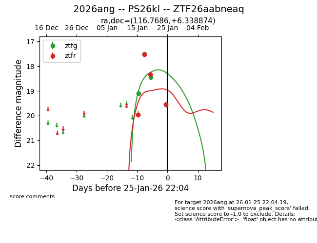

2026ang
Target 2026ang at 2026-01-29 06:21
Aliases and brokers:
FINK: link
Lasair: link
ALeRCE: link
TNS: link
YSE: link
alt names
ZTF26aabneaq (ztf,fink_ztf)
2026ang (tns,yse)
PS26kl (panstarrs)
Coordinates:
equatorial (ra, dec) = 116.7686,+6.33887
equatorial (HMS+DMS) = 07:47:04.46,+06:20:19.95
galactic (l, b) = (213.5660,+15.24659)
Flags:
Photometry:
last ztfg=18.45, ztfr=19.56
3 ztfg, 4 ztfr detections
Lightcurve

Visibility


Additional plots